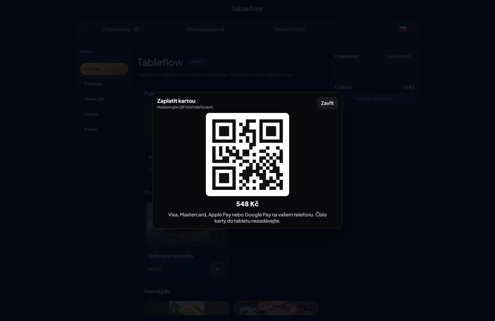
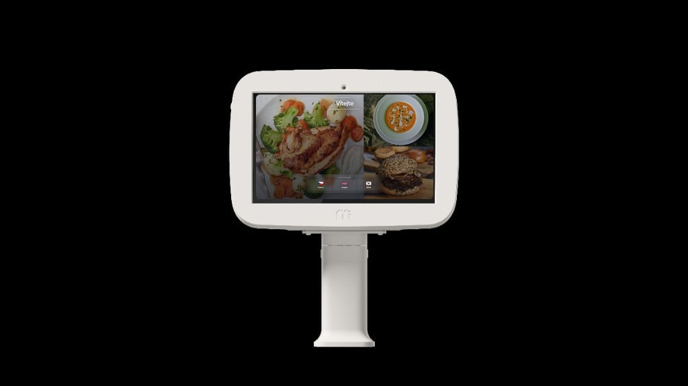

Dotykačka
Integrace do provozu
Propojení s pokladnou
Objednávky z tabletů u stolu se předají do vaší pokladny. Menu a ceny držíte tam, kde je máte dnes — Tableflow je napojí na stoly, ne na oddělený paralelní systém.

Jak propojení funguje
-
Pokladna zůstává zdrojem
U podporované integrace se dostupné položky a ceny načítají z pokladny.
-
Objednávka od stolu
Host odešle objednávku z tabletu. Ta míří ke konkrétnímu stolu v pokladním toku.
-
Provoz bez dvojí práce
Nemusíte přepisovat objednávky z tabletu do pokladny ručně.
Podporované pokladny
Storyous
Individuální podmínky
Propojení je možné za příslušných podmínek a s potřebným API tokenem. Platba kartou přes tablet Tableflow u Storyous není dostupná.Jiný systém
Ověříme individuálně
Napište nám, jakou pokladnu používáte — zjistíme možnosti napojení.Proč na propojení záleží
Samostatné QR menu bez vazby na pokladnu často končí tím, že obsluha stejně vše přepisuje. Tableflow cílí na jeden provozní tok: stůl → objednávka → pokladna.
- Méně chyb z ručního zápisu
- Aktuální nabídka z pokladny (u podporované integrace)
- Tablety a software formou pronájmu

Časté otázky k pokladně
S jakou pokladnou Tableflow funguje?
Aktuálně funguje propojení s Dotykačkou. Storyous lze propojit za příslušných podmínek a s potřebným API tokenem. U jiných systémů ověříme možnosti individuálně.
Musíme zakládat menu znovu?
U podporované integrace se dostupné položky a ceny načítají z pokladny. Rozsah synchronizace závisí na konkrétním systému.
Jak funguje platba s Dotykačkou?
Pokud má restaurace aktivní podporované platební řešení Dotykačky, host může zaplatit na telefonu přes QR kód. Tableflow platby samo nepřijímá ani nezpracovává.

Chcete ověřit propojení s vaší pokladnou?
Napište na info@tableflow.cz nebo vyplňte formulář a uveďte, jaký pokladní systém používáte. Domluvíme prezentaci.